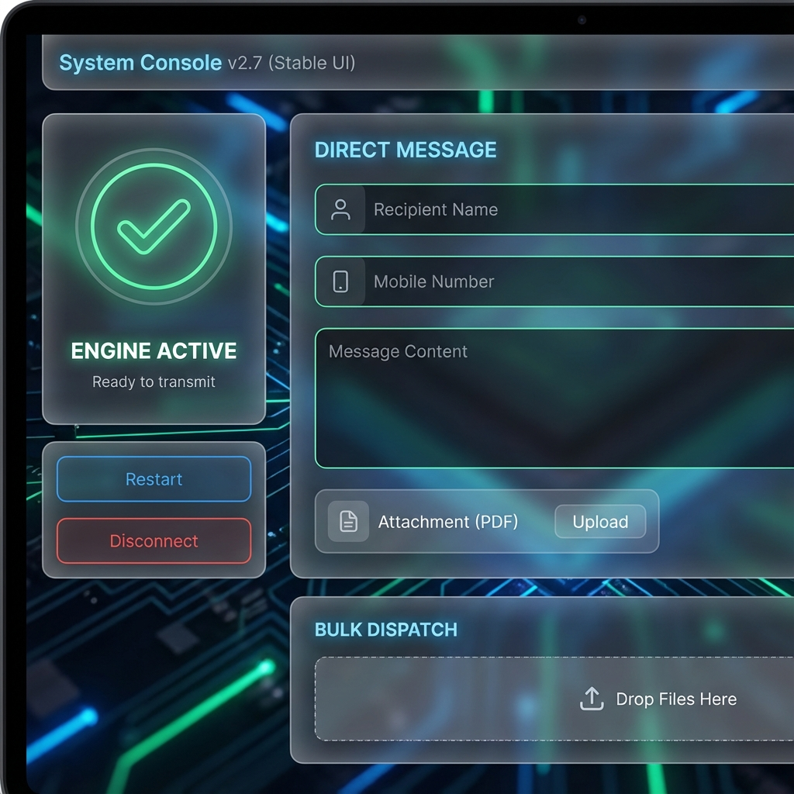
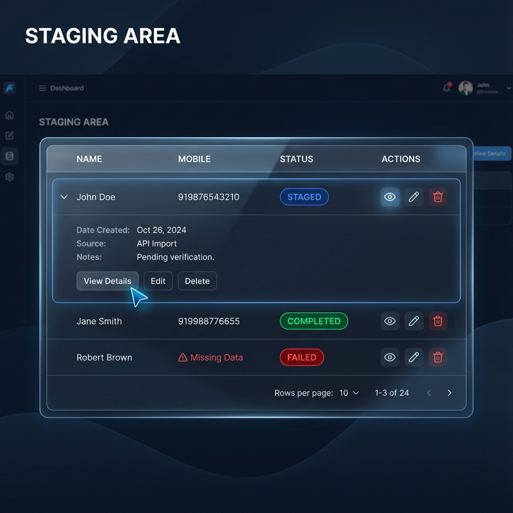
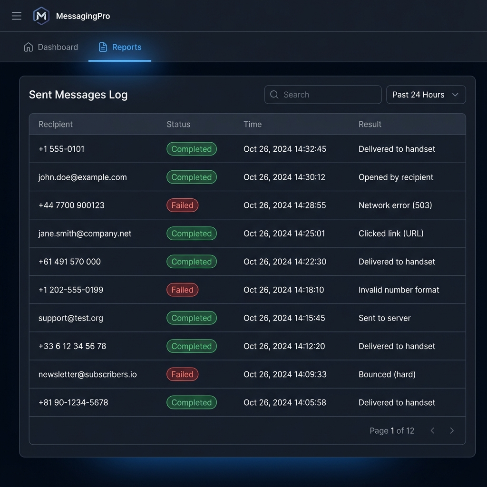

WhatsApp Sender System Guide v2.7
This guide explains how to use your new WhatsApp Automation System to send automated lab reports and messages.
1. Connecting Your Account
Note: You can use any WhatsApp (Personal) or WhatsApp Business account.
- Open the application.
- Look at the Connection widget on the left.
- If you see "Initialize Engine", click it and wait for the "Booting..." spinner.
- Scan the QR Code using WhatsApp > Linked Devices on your phone.
- Status will turn ENGINE ACTIVE.

2. Sending a Single Report
Use the "Direct Message" form for quick sends.
- Recipient Name: Optional (Auto-extracted from PDF if skipped).
- Mobile Number: Required (e.g.,
919876543210).
- Message: Default template is pre-filled.
- Attachment: Upload your PDF report.
3. Bulk Dispatch
Send hundreds of reports at once.
- Scroll to BULK DISPATCH.
- Upload multiple PDF files.
- Review the Staging Area table.
- Click START BULK DISPATCH to begin.

4. Reports & History
Track all delivery statuses in the Reports tab.
| Status |
Meaning |
| Completed |
Delivered successfully |
| Failed |
Check error message (e.g., Invalid Number) |
